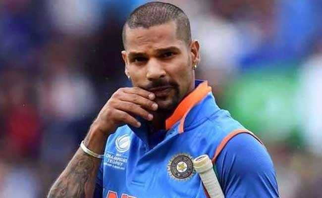
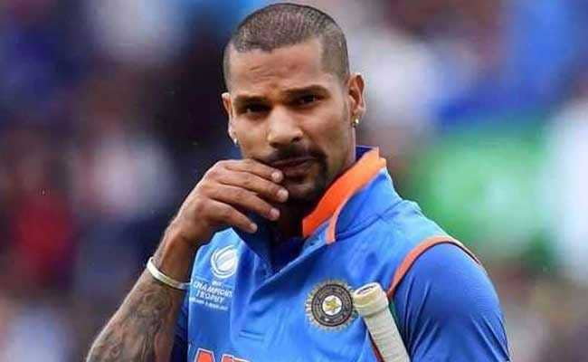
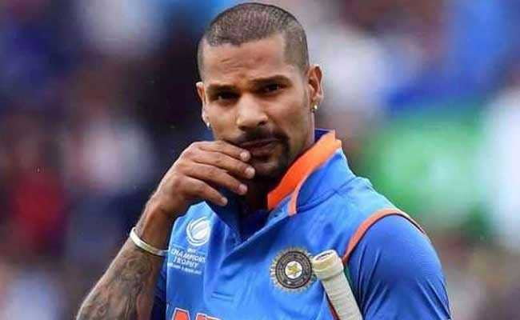

Shikhar Dhawan (born 5 December 1985) is an Indian international cricketer . Being a left-handed opening batsman and an occasional right-arm off break bowler, he plays for Punjab Kings in the Indian Premier League and Delhi in first-class cricket. At the 2013 Champions Trophy, 2015 World Cup, and 2017 Champions Trophy, Dhawan was the leading run-scorer for India.[4] He also became the first player in the history of IPL to score two back-to-back centuries.[5] He was awarded the 'Player of the Tournament' for his exploits in the 2013 ICC Champions Trophy.
Dhawan made his One Day International (ODI) debut against Australia in October 2010 at Visakhapatnam. His Test debut came against the same opposition in March 2013 at Mohali, where he scored the fastest century by any batsman on Test debut and ended his innings with 187 runs from 174 balls.[6][7]

| sr.no | Records | Year |
|---|---|---|
| 1) | 2nd Most catches in an inning[ODI]-(4) | 21 Sep 2018 |
| 2) | 4th Fastest to 6,000 runs in 140 innings[ODI] | 18 july 2021 |
| 3) | 6th Hundreds in consecutive innings[combined test,t20I,ODI]-(3) | 14 March,6 june,11 june 2013 |
| 4) | 6th Most runs in an calander year[t20I]-(689) | 2016 |
| 5) | 8th Most ninties in carrier[ODI]-(6) | 2010-22 |